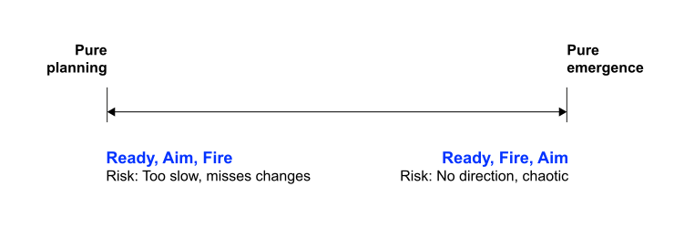
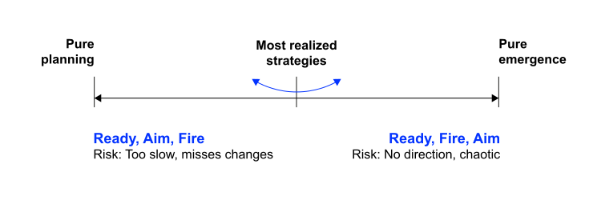

Strategy and Performance Management
Neu-Ulm University of Applied Sciences
July 22, 2025
After this section, you should have a solid understanding of
Good strategy does not pop out of some strategic-management tool, matrix, triangle, or fill-in-the-blanks scheme. Instead, a talented leader has identified the one or two critical issues in a situation—the pivot points that can multiply the effectiveness of the effort—and then focused and concentrated action and resources on them. R. Rumelt (2011)
Turn to your neighbour and identify the key features of a good strategy and a poor strategy, using what you have learned so far as your reference point.
Prepare to present and discuss your findings.
05:00
According to R. P. Rumelt (2012) a good strategy …
Good strategies tend to look
simple and obvious in retrospect.
At its core, strategy is always the same: discover the crucial factors in a situation and design a way to coherently coordinate and focus actions to deal with them.
According to R. P. Rumelt (2012) key hallmarks of poor strategy are:
Poor strategy ignores the power of choice and instead tries to reconcile a variety of conflicting demands.
Poor strategy has many roots, but according to R. P. Rumelt (2012) the key ones are:
The inability to choose
and template-style planning
The analysis of good vs. poor strategy reveals critical requirements for effective strategy formation:
If good strategy requires diagnosis, guiding policy, and coherent actions, then strategy formation must enable deep understanding, creative problem-solving, and coordinated implementation.
Traditional planning approaches often lead to poor strategy because they emphasize process over insight and templates over understanding.
Before diving into theory, let’s examine how strategy actually unfolds in practice.
Netflix’s journey
What can we learn from the Netflix case?
In pairs, discuss:
Be ready to share one example.
07:00
Netflix’s success came from having clear strategic direction (subscription model, customer focus) while remaining open to strategic adaptation (streaming timing, content production, global localization).
This pattern—strategic intent + adaptive execution—is at the heart of effective strategy formation.
Strategy formation refers to the process of crafting strategies that revolve around the interplay of the environment, the organizational operating system, and leadership (Mintzberg, 1978).
In Netflix’s case: Streaming technology and competitor moves (environment) challenged their DVD distribution capabilities (operating system), requiring leadership to navigate between stability and change.
Given this complex reality of strategy formation, what types of strategies actually emerge from this process?


Strategy formation ranges along a spectrum from pure planning to pure adaptation:
Pure planning assumes you can predict and control everything.
Pure adaptation means just reacting without direction.
Understanding the spectrum between deliberate and emergent strategies reveals that most successful strategies blend both elements, but the balance point varies by context.
Strategic management must transform from a periodic planning exercise2 into an ongoing organizational capability for sensing, adapting, and navigating complexity.
Strategies have a life cycle marked by waves of change and continuity.
Strategy cannot be a fixed plan updated at predetermined times, and the dichotomy between formulation and implementation makes little sense (Mintzberg, 1978).
Given this reality, strategy formation is better understood as craft:
Like potters at the wheel, organizations must make sense of the past if they hope to manage the future. Only by coming to understand the patterns that form in their own behavior do they get to know their capabilities and their potential. Thus crafting strategy, like managing craft, requires a natural synthesis of future, present and past. Mintzberg (1987)
Effective strategists integrate past patterns, present realities, and future intent through hands-on engagement.
Crafting effective strategies requires specific organizational capabilities that enable to navigate the interplay between deliberate planning and emergent learning.
Following capabilities directly enable the diagnosis, guiding policy, and coherent actions required for good strategy (Mintzberg, 1987):
Knowing the business, managing stability, managing patterns, detecting discontinuity, and reconciling change and continuity.
Beyond individual capabilities, organizations need collective capabilities for making high-quality strategic decisions quickly in uncertain environments.
Firms successful in fast strategic decision-making frequently have three capabilities (Eisenhardt, 1999):
Building collective intuition,
stimulating quick conflict,
and defusing political behavior.
Strategy formation should be understood as an organizational capability.
Effective strategy formation transforms strategic management from a periodic planning exercise into a continuous organizational capability for navigating complexity.
The five tenets of strategy formation:
The following questions are designed to review and consolidate what you have learned and are a good starting point for preparing for the exam.
Listen to the Decoder Episode with Philips CEO Roy Jakobs and take notes on Philips’ organisational structure.
Read Lorenz & Buchwald (2023) and make notes on following questions:
The term “organizational operating system” can be understood as analogous to a computer’s OS—it’s the underlying infrastructure that makes everything work. In organizations, this includes: formal structures (hierarchies, departments, roles); established processes (how decisions are made, how work flows); core capabilities (what the organization knows how to do well); and cultural norms (unwritten rules about “how we do things here”). Just as a computer OS resists frequent changes to maintain stability, organizational operating systems naturally
resist change even when the environment demands it. This creates inherent tension in strategy formation.
The planning exercise usually involves performing analysis, making decisions, implementing plans, evaluating results and repeating this linear process.